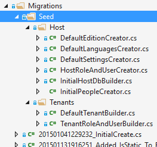

In this document, we will create a sample phonebook application based on ASP.NET Zero (ASP.NET Core & Angular 2+ version) step by step. After all steps, we will have a multi-tenant, localized, authorized, configurable, testable... appliaction.
We're creating and downloading the solution named "Acme.PhoneBook" as described in Getting Started document. Please follow the getting started document, run the application, login as default tenant admin (select Default as tenancy name, use admin as username and 123qwe as password) and see the dashboard below:
Logout from the application for now. We will make our application single-tenant (we will convert it to multi-tenant later). So, we open PhoneBookCoreModule class in the server side and disable multi-tenancy as shown below:
[DependsOn(typeof(AbpZeroCoreModule))]
public class PhoneBookCoreModule : AbpModule
{
public override void PreInitialize()
{
//some other code...
//Enable this line to create a multi-tenant application.
Configuration.MultiTenancy.IsEnabled = false;
//some other code...
}
}
Let's begin from UI and create a new page named "Phone book".
Open app\shared\layout\side-bar.component.ts in the client side which defines menu items in the application. Create new menu item as shown below (You can add it right after the dashboard menu item).
new SideBarMenuItem("PhoneBook", null, "icon-notebook", "/phonebook")
PhoneBook is the menu name (will localize below), null is for permission name (will set it later), icon-notebook is just an arbitrary icon class (from this set) and /phonebook is the angular route.
If you run the application, you can see a new menu item on the left menu, but it won't work if you click to the menu item, since we haven't defined the Angular route yet.
Localization strings are defined in XML files in .Core project (in server side) as shown below:

Open PhoneBook.xml (the default, English localization dictionary) and add the following line:
<text name="PhoneBook">Phone Book</text>
If we don't define "PhoneBook"s value for other localization dictionaries, default value is shown in all languages. For example, we can define it also for Turkish in PhoneBook-tr.xml file:
<text name="PhoneBook">Telefon Rehberi</text>
Note: Any change in server side (including change localization texts) requires recycle of the server application. We suggest to use Ctrl+F5 if you don't need to debugging for a faster startup. In that case, it's enough to make a re-build to recycle the application.
Angular has a powerful URL routing system. AspNet Zero has defined routes in a few places (for modularity, see dev guide). We want to add phone book page to the main module. So, open app\main\main-routing.module.ts (in the client side) and add a new route just below to the dashboard:
{ path: 'phonebook', component: PhoneBookComponent }
We get an error since we haven't defined PhoneBookComponent yet. Also, we ignored permission for now (will implement later).
Create a phonebook folder inside app/main folder and add a new typescript file (phonebook.component.ts) in the phonebook folder as shown below:
import { Component, Injector } from '@angular/core';
import { AppComponentBase } from '@shared/common/app-component-base';
import { appModuleAnimation } from '@shared/animations/routerTransition';
@Component({
templateUrl: './phonebook.component.html',
animations: [appModuleAnimation()]
})
export class PhoneBookComponent extends AppComponentBase {
constructor(
injector: Injector
) {
super(injector);
}
}
We inherited from AppComponentBase which provides some common functions and fields (like localization and access control) for us. It's not required, but makes our job easier. Now, we can return back to main-routing.module.ts and add import statement for the newly created PhoneBookComponent class:
import { PhoneBookComponent } from './phonebook/phonebook.component';
As we declared in phonebook.component.ts we should create a phonebook.component.html view in the same phonebook folder:
<div [@routerTransition]>
<div class="row margin-bottom-5">
<div class="col-xs-12">
<div class="page-head">
<div class="page-title">
<h1>
<span>{{l("PhoneBook")}}</span>
</h1>
</div>
</div>
</div>
</div>
<div class="portlet light margin-bottom-0">
<div class="portlet-body">
<p>PHONE BOOK CONTENT COMES HERE!</p>
</div>
</div>
</div>
l (lower case 'L') function comes from AppComponentBase and used to easily localize texts. [@routerTransition] attribute is required for page transition animation.
And finally, Angular requires to relate every component to a module. So, we are making the following changes on the main.module.ts:
import { NgModule } from '@angular/core';
import { CommonModule } from '@angular/common';
import { BrowserModule } from '@angular/platform-browser';
import { FormsModule } from '@angular/forms';
import { ModalModule, TabsModule, TooltipModule } from 'ng2-bootstrap';
import { UtilsModule } from '@shared/utils/utils.module'
import { AppCommonModule } from '@app/shared/common/app-common.module'
import { MainRoutingModule } from './main-routing.module'
import { MainComponent } from './main.component'
import { DashboardComponent } from './dashboard/dashboard.component';
import { PhoneBookComponent } from './phonebook/phonebook.component';
@NgModule({
imports: [
BrowserModule,
CommonModule,
FormsModule,
ModalModule.forRoot(),
TabsModule.forRoot(),
TooltipModule.forRoot(),
UtilsModule,
AppCommonModule,
MainRoutingModule
],
declarations: [
MainComponent,
DashboardComponent,
PhoneBookComponent
]
})
export class MainModule { }
Added an import statement and added PhoneBookComponent to declarations array. Now, we can refresh the page to see the new added page:

Note: Angular-cli automatically re-compiles and refreshes the page when any changes made to any file in the application.
We define entities in .Core (domain) project (in server side). We can define a Person entity (mapped to PbPersons table in database) to represent a person in phone book as shown below (I created in in a new folder/namespace named People):
using System.ComponentModel.DataAnnotations;
using System.ComponentModel.DataAnnotations.Schema;
using Abp.Domain.Entities.Auditing;
namespace Acme.PhoneBook.People
{
[Table("PbPersons")]
public class Person : FullAuditedEntity
{
public const int MaxNameLength = 32;
public const int MaxSurnameLength = 32;
public const int MaxEmailAddressLength = 255;
[Required]
[MaxLength(MaxNameLength)]
public virtual string Name { get; set; }
[Required]
[MaxLength(MaxSurnameLength)]
public virtual string Surname { get; set; }
[MaxLength(MaxEmailAddressLength)]
public virtual string EmailAddress { get; set; }
}
}
Person's primary key type is int (as default). It inherits FullAuditedEntity that contains creation, modification and deletion audit properties. It's also soft-delete. When we delete a person, it's not deleted by database but marked as deleted (see entity and data filters documentations for more information). We created consts for MaxLength properties. This is a good practice since we will use same values later.
We add a DbSet property for Person entity to PhoneBookDbContext class defined in .EntityFramework project.
public class PhoneBookDbContext : AbpZeroDbContext<Tenant, Role, User>
{
public virtual IDbSet<Person> Persons { get; set; }
//...other code
}
We use EntityFramework Code-First migrations to migrate database schema. Since we added Person entitiy, our DbContext model is changed. So, we should create a new migration to create the new table in the database.
Open Windows Command Prompt, locate to the folder containing the .EntityFramework project and run the dotnet ef migrations add "Added_Persons_Table" command as shown below:

This command will add a migration class named "Added_Persons_Table" as shown below:
public partial class Added_Persons_Table : DbMigration
{
public override void Up()
{
CreateTable(
"dbo.PbPersons",
c => new
{
Id = c.Int(nullable: false, identity: true),
Name = c.String(nullable: false, maxLength: 32),
Surname = c.String(nullable: false, maxLength: 32),
EmailAddress = c.String(maxLength: 255),
IsDeleted = c.Boolean(nullable: false),
DeleterUserId = c.Long(),
DeletionTime = c.DateTime(),
LastModificationTime = c.DateTime(),
LastModifierUserId = c.Long(),
CreationTime = c.DateTime(nullable: false),
CreatorUserId = c.Long(),
},
annotations: new Dictionary<string, object>
{
{ "DynamicFilter_Person_SoftDelete", "EntityFramework.DynamicFilters.DynamicFilterDefinition" },
})
.PrimaryKey(t => t.Id);
}
public override void Down()
{
DropTable("dbo.PbPersons",
removedAnnotations: new Dictionary<string, object>
{
{ "DynamicFilter_Person_SoftDelete", "EntityFramework.DynamicFilters.DynamicFilterDefinition" },
});
}
}
We don't have to know so much about format and rules of this file. But, it's suggested to have a basic understanding of migrations. In the same Windows Command Prompt, we write dotnet ef database update command in order to apply the new migration to database. After updating, we can see that PbPersons table is added to database.

But this new table is empty. We can use EntityFramework's Seed method to add some initial data to database. In ASP.NET Zero, there are some classes to fill initial data for users and settings:

So, we can add a seperated class to fill some people to database as shown below:
using System.Linq;
using Acme.PhoneBook.EntityFramework;
using Acme.PhoneBook.People;
namespace Acme.PhoneBook.Migrations.Seed.Host
{
public class InitialPeopleCreator
{
private readonly PhoneBookDbContext _context;
public InitialPeopleCreator(PhoneBookDbContext context)
{
_context = context;
}
public void Create()
{
var douglas = _context.Persons.FirstOrDefault(p => p.EmailAddress == "douglas.adams@fortytwo.com");
if (douglas == null)
{
_context.Persons.Add(
new Person
{
Name = "Douglas",
Surname = "Adams",
EmailAddress = "douglas.adams@fortytwo.com"
});
}
var asimov = _context.Persons.FirstOrDefault(p => p.EmailAddress == "isaac.asimov@foundation.org");
if (asimov == null)
{
_context.Persons.Add(
new Person
{
Name = "Isaac",
Surname = "Asimov",
EmailAddress = "isaac.asimov@foundation.org"
});
}
}
}
}
These type of default data is good since we can also use these data in unit tests. Surely, we should be careful about seed data since this code will always be executed after each dotnet ef database update command (See EntityFramework documentations to know more about seed data). This class (InitialPeopleCreator) is created and called in InitialHostDbBuilder class, and it's called from EntityFramework's Configuration class. This is not so important, just for a good code organization (see source codes).
public class InitialHostDbBuilder
{
//existing codes...
public void Create()
{
//existing code...
new InitialPeopleCreator(_context).Create();
_context.SaveChanges();
}
}
We execute dotnet ef database update command again. This command runs seed and adds two people to PbPersons table:

An Application Service is used from client (presentation layer) to perform operations (use cases) of the application.
Application services are located in .Application project. We creating an application service to get people from server. So, we're first creating an interface to define the person application service (while this interface is optional, we suggest you to create it):
using Abp.Application.Services;
using Abp.Application.Services.Dto;
namespace Acme.PhoneBook.People
{
public interface IPersonAppService : IApplicationService
{
ListResultDto<PersonListDto> GetPeople(GetPeopleInput input);
}
}
An application service method gets/returns DTOs. ListResultDto is a pre-build helper DTO to return a list of another DTO. GetPeopleInput is a DTO to pass request parameters to GetPeople method. So, GetPeopleIntput and PersonListDto are defined as shown below:
public class GetPeopleInput
{
public string Filter { get; set; }
}
[AutoMapFrom(typeof(Person))]
public class PersonListDto : FullAuditedEntityDto
{
public string Name { get; set; }
public string Surname { get; set; }
public string EmailAddress { get; set; }
}
AutoMapFrom attribute is used to configure AutoMapper to create mapping from Person to PersonListDto. FullAuditedEntityDto used to inherit audit properties automatically. See application service and DTO documentations for more information.
After defining interface, we can implement it as shown below:
using System.Collections.Generic;
using System.Linq;
using Abp.Application.Services.Dto;
using Abp.AutoMapper;
using Abp.Domain.Repositories;
using Abp.Extensions;
using Abp.Linq.Extensions;
using Acme.PhoneBook.People.Dtos;
namespace Acme.PhoneBook.People
{
public class PersonAppService : PhoneBookAppServiceBase, IPersonAppService
{
private readonly IRepository<Person> _personRepository;
public PersonAppService(IRepository<Person> personRepository)
{
_personRepository = personRepository;
}
public ListResultDto<PersonListDto> GetPeople(GetPeopleInput input)
{
var persons = _personRepository
.GetAll()
.WhereIf(
!input.Filter.IsNullOrEmpty(),
p => p.Name.Contains(input.Filter) ||
p.Surname.Contains(input.Filter) ||
p.EmailAddress.Contains(input.Filter)
)
.OrderBy(p => p.Name)
.ThenBy(p => p.Surname)
.ToList();
return new ListResultDto<PersonListDto>(persons.MapTo<List<PersonListDto>>());
}
}
}
We're injecting person repository (it's automatically created by ABP) and using it to filter and get people from database.
WhereIf is an extension method here (defined in Abp.Linq.Extensions namespace). It performs Where condition, only if filter is not null or empty. IsNullOrEmpty is also an extension method (defined in Abp.Extensions namespace). ABP has many similar shortcut extension methods. MapTo method automatically converts list of Person entities to list of PersonListDto entities using AutoMapper library.
We don't manually open database connection or start/commit transactions manually. It's automatically done with ABP framework's Unit Of Work system. See UOW documentation for more.
We don't handle exceptions manually (using a try-catch block). Because ABP framework automatically handles all exceptions on the web layer and returns appropriate error messages to the client. It then handles errors on the client and shows needed error information to the user. See exception handling document for more.
You can skip this section if you don't interest in automated testing.
By writing unit test, we can test PersonAppService.GetPeople method without creating a user interface. We write unit test in .Tests project in the solution.
Since we disabled multitenancy, we should disable it for unit tests too. Open appsettings.json in .Tests project and set "MultiTenancyEnabled" to false. After a rebuild and run unit tests, you will see that some tests are skipped (those are related to multitenancy).
Let's create first test to verify getting people without any filter:
using Acme.PhoneBook.People;
using Acme.PhoneBook.People.Dtos;
using Shouldly;
using Xunit;
namespace Acme.PhoneBook.Tests.People
{
public class PersonAppService_Tests : AppTestBase
{
private readonly IPersonAppService _personAppService;
public PersonAppService_Tests()
{
_personAppService = Resolve<IPersonAppService>();
}
[Fact]
public void Should_Get_All_People_Without_Any_Filter()
{
//Act
var persons = _personAppService.GetPeople(new GetPeopleInput());
//Assert
persons.Items.Count.ShouldBe(2);
}
}
}
We derived test class from AppTestBase. AppTestBase class initializes all system, creates an in-memory fake database, seeds initial data (that we created before) to database and logins to application as admin. So, this is actually an integration test since it tests all server-side code from entitiy framework mapping to application services, validation and authorization.
In constructor, we get (resolve) an IPersonAppService from dependency injection container. It creates the PersonAppService class with all dependencies. Then we can use it in test methods.
Since we're using xUnit, we add Fact attribute to each test method. In the test method, we called GetPeople method and checked if there are two people in the returned list as we know that there were 2 people in initial database.
Let's run the all unit tests in Test Explorer and see if it works:

As you see, it worked successfully. Now, we know that PersonAppService works properly without any filter. Let's add a new unit test to get filtered people:
[Fact]
public void Should_Get_People_With_Filter()
{
//Act
var persons = _personAppService.GetPeople(
new GetPeopleInput
{
Filter = "adams"
});
//Assert
persons.Items.Count.ShouldBe(1);
persons.Items[0].Name.ShouldBe("Douglas");
persons.Items[0].Surname.ShouldBe("Adams");
}
Again, since we know initial database, we can check returned results easily. Here, initial test data is important. When we change initial data, our test may fail even if our services are correct. So, it's better to write unit tests independed of initial data as much as possible. We could check incoming data to see if every people contains "adams" in his/her name, surname or email. Thus, if we add new people to initial data, our tests remain working.
There are many techniques on unit testing, I kept it simple here. But ASP.NET Zero template makes very easy to write unit and integration tests by base classes and pre-build test codes.
Now, we can switch to the client side and use GetPeople method to show a list of people on the UI.
First, run (prefer Ctrl+F5 to be faster) the server side application (.Web.Host project). Then run nswag/refresh.bat file on the client side to re-generate service proxy classes (they are used to call server side service methods).
Since we added a new service, we should add it to shared/service-proxies/service-proxy.module.ts. Just open it and add ApiServiceProxies.PersonServiceProxy to the providers array. This step is only required when we add a new service. If we change an existing service, it's not needed.
Sometimes angular-cli can not understand the file changes. In that case, stop it and re-run npm start command.
Change phonebook.component.ts as like below:
import { Component, Injector, OnInit } from '@angular/core';
import { AppComponentBase } from '@shared/common/app-component-base';
import { appModuleAnimation } from '@shared/animations/routerTransition';
import { PersonServiceProxy, PersonListDto, ListResultDtoOfPersonListDto } from '@shared/service-proxies/service-proxies';
@Component({
templateUrl: './phonebook.component.html',
animations: [appModuleAnimation()]
})
export class PhoneBookComponent extends AppComponentBase implements OnInit {
people: PersonListDto[] = [];
filter: string = '';
constructor(
injector: Injector,
private _personService: PersonServiceProxy
) {
super(injector);
}
ngOnInit(): void {
this.getPeople();
}
getPeople(): void {
this._personService.getPeople(this.filter).subscribe((result) => {
this.people = result.items;
});
}
}
We inject PersonServiceProxy, call it's getPeople method and subscribe to get the result. We do this in ngOnInit function (defined in Angular's OnInit interface). Assigned returned items to the people class member.
Now, we can use this people member from the view, phonebook.component.html:
<div [@routerTransition]>
<div class="row margin-bottom-5">
<div class="col-xs-12">
<div class="page-head">
<div class="page-title">
<h1>
<span>{{l("PhoneBook")}}</span>
</h1>
</div>
</div>
</div>
</div>
<div class="portlet light margin-bottom-0">
<div class="portlet-body">
<h3>{{l("AllPeople")}}</h3>
<div class="list-group">
<a *ngFor="let person of people" href="javascript:;" class="list-group-item">
<h4 class="list-group-item-heading">
{{person.name + ' ' + person.surname}}
</h4>
<p class="list-group-item-text">
{{person.emailAddress}}
</p>
</a>
</div>
</div>
</div>
</div>
We simply used ngFor directive to loop and render people data. See the result:

We successfully retrieved list of people from database to the page.
We normally use a javascript based rich table/grid library to show tabular data, instead of manually rendering data like that. For example, we used jTable library to show users on the Users page of AspNet Zero. Always use such components since they make things much more easier and provides a much better user experience.
We did not use a table component here, because we want to show basics of Angular instead of going details of a 3rd party library.
Next step is to create a modal to add a new item to phone book.
We first define CreatePerson method in IPersonAppService interface:
Task CreatePerson(CreatePersonInput input);
Then we create CreatePersonInput DTO that defines parameters of the method:
[AutoMapTo(typeof(Person))]
public class CreatePersonInput
{
[Required]
[MaxLength(Person.MaxNameLength)]
public string Name { get; set; }
[Required]
[MaxLength(Person.MaxSurnameLength)]
public string Surname { get; set; }
[EmailAddress]
[MaxLength(Person.MaxEmailAddressLength)]
public string EmailAddress { get; set; }
}
CreatePersonInput is mapped to Person entity (we will use mapping below). All properties are decorated by data annotation attributes to provide automatic validation. Notice that we use same consts defined in Person entity for MaxLength properties.
Here, the implementation of CreatePerson method:
public async Task CreatePerson(CreatePersonInput input)
{
var person = input.MapTo<Person>();
await _personRepository.InsertAsync(person);
}
A Person entity is created by mapping given input, then inserted to database. We used async/await pattern here. All methods in ASP.NET Zero startup project is async. It's adviced to use async/await wherever possible.
You can skip this section if you don't interest in automated testing.
We can create a unit test method to test CreatePerson method as shown below:
[Fact]
public async Task Should_Create_Person_With_Valid_Arguments()
{
//Act
await _personAppService.CreatePerson(
new CreatePersonInput
{
Name = "John",
Surname = "Nash",
EmailAddress = "john.nash@abeautifulmind.com"
});
//Assert
UsingDbContext(
context =>
{
var john = context.Persons.FirstOrDefault(p => p.EmailAddress == "john.nash@abeautifulmind.com");
john.ShouldNotBe(null);
john.Name.ShouldBe("John");
});
}
Test method also written using async/await pattern since calling method is async. We called CreatePerson method, then checked if given person is in the database. UsingDbContext method is a helper method of AppTestBase class (which we inherited this unit test class from). It's used to easily get a reference to DbContext and use it directly to perform database operations.
This method successfully works since all required fields are supplied. Let's try to create a test for invalid arguments:
[Fact]
public async Task Should_Not_Create_Person_With_Invalid_Arguments()
{
//Act and Assert
await Assert.ThrowsAsync<AbpValidationException>(
async () =>
{
await _personAppService.CreatePerson(
new CreatePersonInput
{
Name = "John"
});
});
}
We did not set Surname property of CreatePersonInput despite of it's required. So, it throws AbpValidationException automatically. Also, we can not send null to CreatePerson method since validation system also checks it. This test calls CreatePerson with invalid arguments and asserts that it thows AbpValidationException. See validation document for more information.
We will create a Bootstrap Modal to create a new person. AspNet Zero uses ng2-bootstrap library to create modals (you can use another library, but we will use it in this sample too). Final modal will be like below:

First of all, we should use nswag/refresh.bat to re-generate service-proxies. This will generate the code that is needed to call PersonAppService.CreatePerson method from client side. Notice that you should rebuild & run the server side application before re-generating the proxy scripts.
We are starting from creating a new component, named create-person-modal.component.ts into client side phonebook folder:
import { Component, ViewChild, Injector, ElementRef, Output, EventEmitter } from '@angular/core';
import { ModalDirective } from 'ng2-bootstrap';
import { PersonServiceProxy, CreatePersonInput } from '@shared/service-proxies/service-proxies';
import { AppComponentBase } from '@shared/common/app-component-base';
@Component({
selector: 'createPersonModal',
templateUrl: './create-person-modal.component.html'
})
export class CreatePersonModalComponent extends AppComponentBase {
@Output() modalSave: EventEmitter<any> = new EventEmitter<any>();
@ViewChild('modal') modal: ModalDirective;
@ViewChild('nameInput') nameInput: ElementRef;
person: CreatePersonInput;
active: boolean = false;
saving: boolean = false;
constructor(
injector: Injector,
private _personService: PersonServiceProxy
) {
super(injector);
}
show(): void {
this.active = true;
this.person = new CreatePersonInput();
this.modal.show();
}
onShown(): void {
$(this.nameInput.nativeElement).focus();
}
save(): void {
this.saving = true;
this._personService.createPerson(this.person)
.finally(() => this.saving = false)
.subscribe(() => {
this.notify.info(this.l('SavedSuccessfully'));
this.close();
this.modalSave.emit(this.person);
});
}
close(): void {
this.modal.hide();
this.active = false;
}
}
Let me explain some parts of this class:
The code is simple and easy to understand except a small hack: an active flag is used to reset validation for angular view (explained in angular's documentation).
As declared in the component, we are creating the create-person-modal.component.html file in the same folder as shown below:
<div bsModal #modal="bs-modal" (onShown)="onShown()" class="modal fade" tabindex="-1" role="dialog" aria-labelledby="modal" aria-hidden="true" [config]="{backdrop: 'static'}">
<div class="modal-dialog">
<div class="modal-content">
<form *ngIf="active" #personForm="ngForm" novalidate (ngSubmit)="save()">
<div class="modal-header">
<button type="button" class="close" (click)="close()" aria-label="Close">
<span aria-hidden="true">×</span>
</button>
<h4 class="modal-title">
<span>{{l("CreateNewPerson")}}</span>
</h4>
</div>
<div class="modal-body">
<div class="form-group form-md-line-input form-md-floating-label no-hint">
<input #nameInput class="form-control" type="text" name="name" [(ngModel)]="person.name" required maxlength="32">
<label>{{l("Name")}}</label>
</div>
<div class="form-group form-md-line-input form-md-floating-label no-hint">
<input class="form-control" type="email" name="surname" [(ngModel)]="person.surname" required maxlength="32">
<label>{{l("Surname")}}</label>
</div>
<div class="form-group form-md-line-input form-md-floating-label no-hint">
<input class="form-control" type="email" name="emailAddress" [(ngModel)]="person.emailAddress" required maxlength="255" pattern="^\w+([\.-]?\w+)*@\w+([\.-]?\w+)*(\.\w{1,})+$"> <label>{{l("EmailAddress")}}</label>
</div>
</div>
<div class="modal-footer">
<button [disabled]="saving" type="button" class="btn btn-default" (click)="close()">{{l("Cancel")}}</button>
<button type="submit" class="btn btn-primary blue" [disabled]="!personForm.form.valid" [buttonBusy]="saving" [busyText]="l('SavingWithThreeDot')"><i class="fa fa-save"></i> <span>{{l("Save")}}</span></button>
</div>
</form>
</div>
</div>
</div>
Most of this code is similar for all modals. The important part is how we binded model to the view using ngModel directive. As like all components, Angular requires to relate it to a module. We should it to declarations array of main.module.ts as like shown below:
...previous imports
import { CreatePersonModalComponent } from './phonebook/create-person-modal.component';
@NgModule({
imports: [
...existing module imports...
],
declarations: [
MainComponent,
DashboardComponent,
PhoneBookComponent,
CreatePersonModalComponent
]
})
export class MainModule { }
We need to put a "Create new person" button to the 'people list page' to open the modal when clicked to the button. To do that, we made the following changes in phonebook.component.html:
<div [@routerTransition]>
<div class="row margin-bottom-5">
<div class="col-xs-6">
<div class="page-head">
<div class="page-title">
<h1>
<span>{{l("PhoneBook")}}</span>
</h1>
</div>
</div>
</div>
<div class="col-xs-6 text-right">
<button class="btn btn-primary blue" (click)="createPersonModal.show()"><i class="fa fa-plus"></i> {{l("CreateNewPerson")}}</button>
</div>
</div>
<div class="portlet light margin-bottom-0">
<div class="portlet-body">
<h3>{{l("AllPeople")}}</h3>
<div class="list-group">
<a *ngFor="let person of people" href="javascript:;" class="list-group-item">
<h4 class="list-group-item-heading">
{{person.name + ' ' + person.surname}}
</h4>
<p class="list-group-item-text">
{{person.emailAddress}}
</p>
</a>
</div>
</div>
</div>
<createPersonModal #createPersonModal (modalSave)="getPeople()"></createPersonModal>
</div>
Made some minor changes in the view; Added a button to open the modal and the createPersonModal component as like another HTML tag (which matches to the selector in the create-person-modal.component.ts).
At this point, anyone can enter phone book page since no authorization defined. We will define two permission:
Go to AppAuthorizationProvider class in the server side and add a new permission as shown below (you can add just below the dashboard permission):
pages.CreateChildPermission(AppPermissions.Pages_Tenant_PhoneBook, L("PhoneBook"), multiTenancySides: MultiTenancySides.Tenant);
A permission should have a unique name. We define permission names as constant strings in AppPermissions class. It's a simple constant string:
public const string Pages_Tenant_PhoneBook = "Pages.Tenant.PhoneBook";
Unique name of this permission is "Pages.Tenant.PhoneBook". While you can set any string (as long as it's unique), it's suggested to use that convention. A permission can have a localizable display name: "PhoneBook" here. (see "Adding a New Page" section for more about localization, since it's very similar). Lastly, we set that this is a tenant level permission.
AbpAuthorize attribute can be used as class level or method level to protect an application service or service method from unauthorized users. Since all server side code is located in PersonAppService class, we can declare a class level attribute as shown below:
[AbpAuthorize(AppPermissions.Pages_Tenant_PhoneBook)]
public class PersonAppService : PhoneBookAppServiceBase, IPersonAppService
{
//...
}
Now, let's try to enter Phone Book page by clicking the menu item:

We get an error message. This exception is thrown when any method of PersonAppService is called without required permission.
While we got an exception and could not see the actual data, we could still entered to the page. We should prevent it. To do that, open main-routing.module.ts and change the route definition like that:
{ path: 'phonebook', component: PhoneBookComponent, data: { permission: 'Pages.Tenant.PhoneBook' } }
AuthRouteGuard class automatically checks route permission data and prevents entering to the view if specified permission is not granted. Try to click Phone Book menu!
While user can not enter to the page, the menu item still there! We should also hide the Phone book menu item. It's easy, open side-bar.component.ts and add change PhoneBook menu definition as shown below:
new SideBarMenuItem("PhoneBook", 'Pages.Tenant.PhoneBook', "icon-notebook", "/phonebook")
So, how we can enter the page now? Simple, go to Role Management page and edit admin role:

We see that a new permission named "Phone book" added to permissions tab. So, we can check it and save the role. After saving, we need to refresh the whole page to refresh permissions for the current user. We could also grant this permission for a specific user (see development guide document for details about roles and users).
Now, we can enter the Phone book page again.
While a permission for a page is useful and probably always needed, we may want to define additional permissions to perform some specific actions on a page, like creating a new person.
Defining a permission is similar (in the AppAuthorizationProvider class):
var phoneBook = pages.CreateChildPermission(AppPermissions.Pages_Tenant_PhoneBook, L("PhoneBook"), multiTenancySides: MultiTenancySides.Tenant);
phoneBook.CreateChildPermission(AppPermissions.Pages_Tenant_PhoneBook_CreatePerson, L("CreateNewPerson"), multiTenancySides: MultiTenancySides.Tenant);
First permission was defined before. In the second line, we are creating a child permission of first one. Remember to create a constant in AppPermissions class:
public const string Pages_Tenant_PhoneBook_CreatePerson = "Pages.Tenant.PhoneBook.CreatePerson";
This time, we're declaring AbpAuthorize attribute just for CreatePerson method:
[AbpAuthorize(AppPermissions.Pages_Tenant_PhoneBook_CreatePerson)]
public async Task CreatePerson(CreatePersonInput input)
{
//...
}
If we run the application and try to create a person, we get an authorization error after clicking the save button. But, it's good to completely hide Create New Person button if we don't have the permission. It's very simple:
Open the phonebook.component.html view and use isGranted condition as shown below:
<button *ngIf="isGranted('Pages.Tenant.PhoneBook.CreatePerson')" class="btn btn-primary blue" (click)="createPersonModal.show()"><i class="fa fa-plus"></i> {{l("CreateNewPerson")}}</button>
In this way, the "Create New Person" button does not rendered in server and user can not see this button.
To see the button again, we can go to role or user manager and grant related permission as shown below:

As shown above, Create new person permission is a child permission of the Phone book. Remember to refresh page to get permissions updated.
Let's add a delete button in people list as shown below:

We're starting from UI in this case.
We're changing phonebook.component.html view to add a delete button (related part is shown here):
...
<h3>{{l("AllPeople")}}</h3>
<div class="list-group">
<a *ngFor="let person of people" href="javascript:;" class="list-group-item">
<h4 class="list-group-item-heading">
{{person.name + ' ' + person.surname}}
<button (click)="deletePerson(person)" title="{{l('Delete')}}" class="btn btn-circle btn-icon-only red delete-person" href="javascript:;">
<i class="icon-trash"></i>
</button>
</h4>
<p class="list-group-item-text">
{{person.emailAddress}}
</p>
</a>
</div>
...
We simply added a button which calls deletePerson method (will be defined) when it's clicked. You can define a permission for 'deleting person' as we did for 'creating person' above.
We're using a LESS style here to take the button right. Created a file named phonebook.component.less (in phonebook folder) and added following lines:
.list-group-item-heading {
button.delete-person {
float: right;
}
}
And adding the style to the phonebook.component.ts Component declaration:
@Component({
templateUrl: './phonebook.component.html',
styleUrls: ['./phonebook.component.less'],
animations: [appModuleAnimation()]
})
Now, we can now the buttons, but they don't work since we haven't defined the deletePerson method yet.
Let's leave the client side and add a DeletePerson method to the server side. We are adding it to the service interface,IPersonAppService::
Task DeletePerson(EntityDto input);
EntityDto is a shortcut of ABP if we only get an id value. Implementation (in PersonAppService) is very simple:
[AbpAuthorize(AppPermissions.Pages_Tenant_PhoneBook_DeletePerson)]
public async Task DeletePerson(EntityDto input)
{
await _personRepository.DeleteAsync(input.Id);
}
Since we changed server side services, we should re-generate the client side service proxies via NSwag. Make server side running and use refresh.bat as we did before.
Now, we can add deletePerson method to phonebook.component.ts:
deletePerson(person: PersonListDto): void {
this.message.confirm(
this.l('AreYouSureToDeleteThePerson', person.name),
isConfirmed => {
if (isConfirmed) {
this._personService.deletePerson(person.id).subscribe(() => {
this.notify.info(this.l('SuccessfullyDeleted'));
_.remove(this.people, person);
});
}
}
);
}
It first shows a confirmation message when we click the delete button:

If we click Yes, it simply calls deletePerson method of PersonAppService and shows a notification if operation succeed. Also, removes the person from the person array using lodash library. We also added an import statement before the @Component declaration:
import * as _ from 'lodash';
Now, we will implement search functionality of GetPeople method. UI is shown below:

We added a search input to phonebook.component.html view (showing the related part of the code):
<h3>{{l("AllPeople")}} ({{people.length}})</h3>
<div class="form">
<form class="horizontal-form">
<div class="form-body">
<div class="row margin-bottom-10">
<div class="col-md-12">
<div class="inputs inputs-full-width">
<div class="portlet-input">
<div class="input-group">
<input [(ngModel)]="filter" name="filter" autoFocus class="form-control" [placeholder]="l('SearchWithThreeDot')" type="text">
<span class="input-group-btn">
<button (click)="getPeople()" class="btn default" type="submit"><i class="icon-magnifier"></i></button>
</span>
</div>
</div>
</div>
</div>
</div>
</div>
</form>
</div>
<div class="list-group">
<a *ngFor="let person of people" href="javascript:;" class="list-group-item">
<h4 class="list-group-item-heading">
{{person.name + ' ' + person.surname}}
<button (click)="deletePerson(person)" title="{{l('Delete')}}" class="btn btn-circle btn-icon-only red delete-person" href="javascript:;">
<i class="icon-trash"></i>
</button>
</h4>
<p class="list-group-item-text">
{{person.emailAddress}}
</p>
</a>
</div>
We also added currently filtered people count (people.length) in the header. Since we have already defined and used the filter property in phonebook.component.ts and implemented in the server side, this new code immediately works.
THIS DOCUMENT HAS NOT BEEN COMPLETED YET.